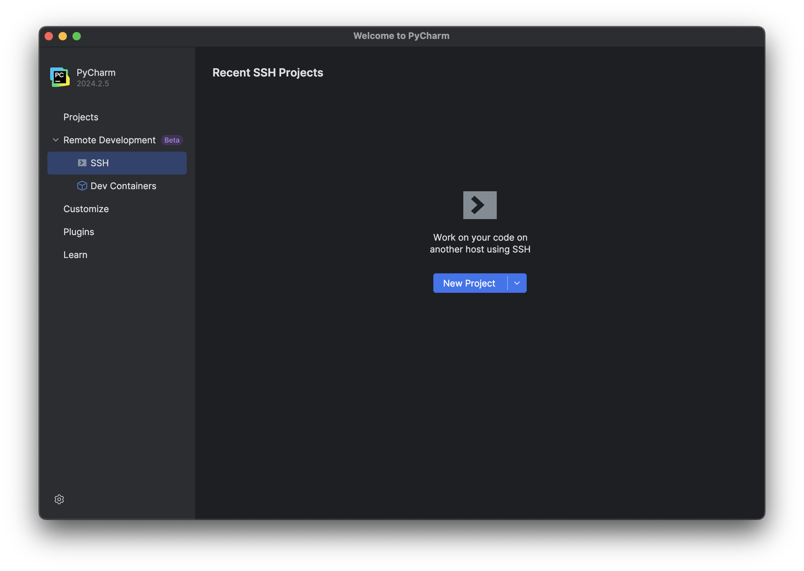
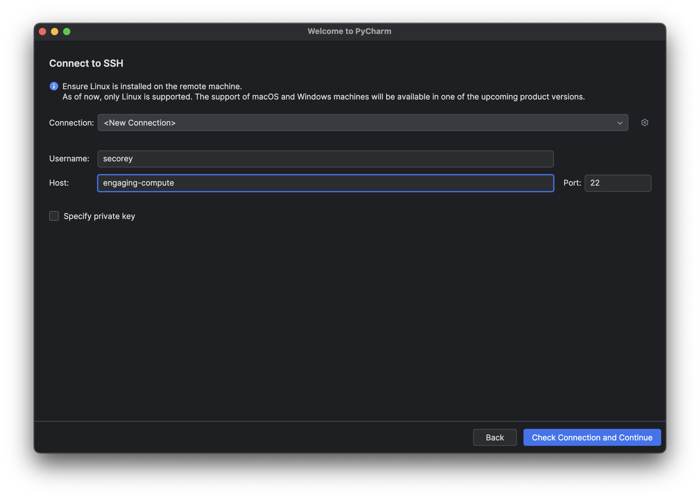
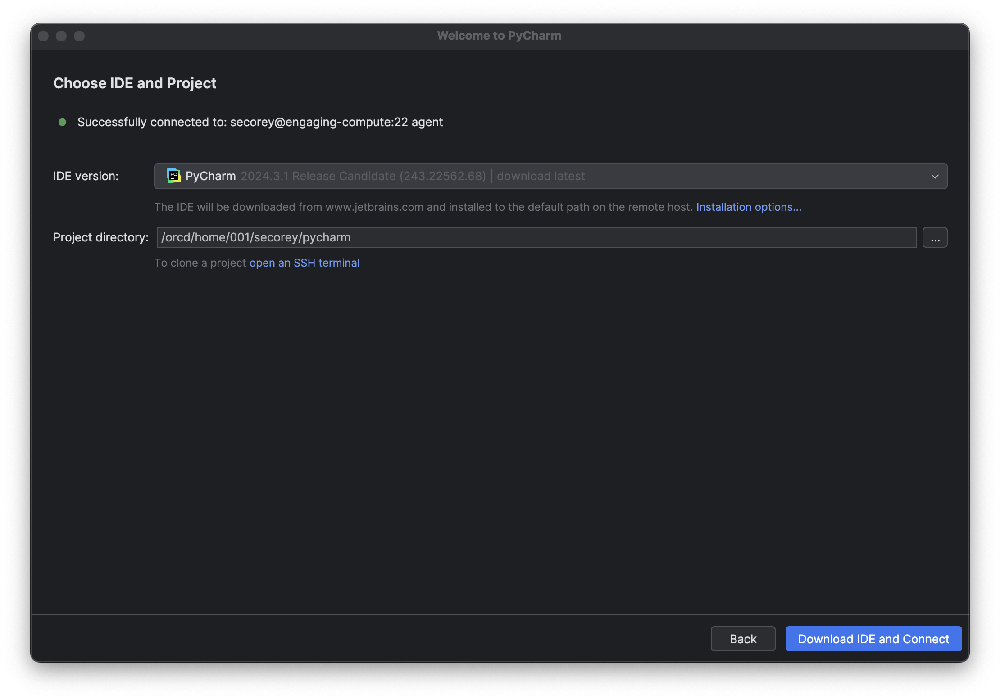

Using PyCharm on an ORCD System
PyCharm provides an integrated development environment for users to edit their Python code and has support for remote development via SSH. While we generally recommend using VS Code due to its much broader set of features while being free and open-source, some prefer the simplicity of PyCharm. Furthermore, PyCharm has a free license for students and teachers.
To use PyCharm on the cluster, the setup is similar to VS Code. However, PyCharm uses a lot more memory and compute power to run, so it is essential that you run it on a compute node. Trying to connect PyCharm to a login node will probably not work.
Note
To use PyCharm on a compute node, an SSH key is necessary. If you haven't set up SSH keys yet, refer to the SSH Key Setup guide.
Note
PyCharm is not available on SuperCloud because SuperCloud does not support file locking.
Requesting a Compute Node
To run PyCharm on a compute node, you first need to request an interactive job with 4 cores on the cluster. PyCharm recommends using 4 cores so that the application can run more quickly.
Note
PyCharm is not supported on Centos7 nodes.
Editing your SSH Config File
Once you are in the interactive session, make a note of the node you are running
on. We now want to edit our local SSH config file so that PyCharm can run on
that node. To do this, open the command line and locate your config file. It
is usually located in ~/.ssh/config. Using your favorite editor, paste the
following (enter your username and the correct node number):
Note
If you don't want to edit your config file every time you start up a
PyCharm session, you can request a specific node each time you start an
interactive session with the flag --nodelist=nodeXXXX. Just make sure that
the node in your config file reflects the node that you're requesting.
However, the node you're requesting may be unavailable, in which case you'll
have to choose a different node and edit your config file anyway.
Starting PyCharm
Currently, PyCharm does not work well with Duo authentication. To get around this, connect to the MIT VPN so that Duo is not required.
Open PyCharm and click Remote Development > SSH on the left-hand side:

Create a new project and connect to SSH. Enter your username and host name (in
this case it's engaging-compute), then click "Check Connection and Continue":

This will open a new page where you will enter your project directory. Enter
the path to the directory on Engaging that you'd like to work in. You are likely
to get the most success if you point PyCharm to a blank directory (I've named
mine pycharm for now). Click "Download IDE and Connect":

Troubleshooting
If you are still running into issues, try deleting the JetBrains cache in your home directory on the cluster via the command line: